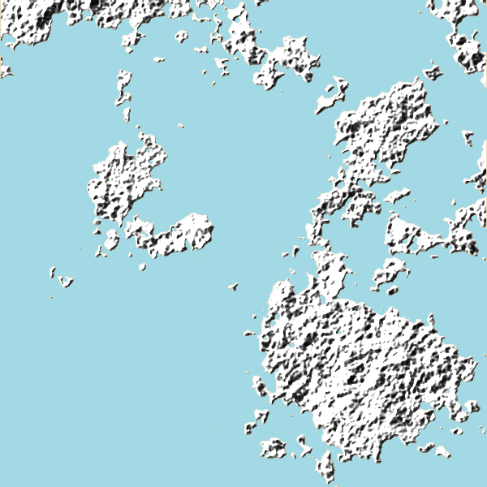

GIMPをいじっていたらたまたま架空の陸地のような画像が作れたので作り方を記録しておきます。
見本

設定次第で島にも大陸にもできます。
作り方
所要時間: 10分くらい
陸地レイヤー・海レイヤー
1. 黒無地の背景に霧を生成

「フィルター」>「下塗り」>「雲」>「霧」で霧を生成します。
パラメータのTurbulenceを小さくすると大きな塊に、大きくすると分散した形になります。
今回はTurbulenceを3.0に設定しました。
2. 黒無地と霧を合成し、ガウスぼかしをかける
「フィルター」>「ぼかし」>「ガウスぼかし」でガウスぼかしをかけます。
ぼかしの半径を小さくすると海岸線が複雑な形に、大きくすると単純な形になります。
今回は水平・垂直共に5.0に設定しました。
3. 画像を2段階化

「色」>「しきい値」で画像を2段階化します。
しきい値の値はスライダーをいじって感覚で設定します。
白い方と黒い方、どちらかを陸、どちらかを海に決めます。
今回は白い方を陸にしました。
4. 海と陸の色をつける

陸地にする方（今回は白い方）を「色域を選択」で選択し、選択範囲を保存します。
新しいレイヤーを2枚作り、1枚は選択範囲を使ってベージュで塗りつぶします。 もう1枚は選択範囲を使わずに水色で塗りつぶします。
色調は後で調整できるので、ここでは大雑把な色の選択でいいです。
凹凸レイヤー
5. 凹凸地形の元になる霧を生成
新しいレイヤーを2枚作ります。
1枚は黒地で先ほど保存した選択範囲を塗りつぶしたもの、もう1枚は選択範囲の範囲に霧を生成したものです。
6. 上の2枚を合成しガウスぼかしをかける
7. エンボス加工

「フィルター」>「変形」>「エンボス」でエンボスをかけます。
今回は明度を反転する前提で、方向320度、持ち上げ0、深度10に設定していますが、最終的に凸凹しているように見えればいいので適当に設定してください。
8. エンボスを明度を反転

「色」>「明度の反転」で右下に影が来るような画像にします。
乗算で合成し、透過度を適当に設定します。
植生レイヤー
9. 緑色の霧を生成

保存した陸地の範囲の選択範囲を使って緑色の霧を生成します。
任意でぼかしたりするといいと思います。
色の調整
10. レイヤーごとに色を調整する
お好みでレイヤーごとに色を調整します。
11. その他微調整

陸地の周りに青いぼかしを入れました。とりあえず完成。
その他の作例

霧で雲を作ったり、明るさをグラデーション隅をぼかしたりするといい感じになると思います。